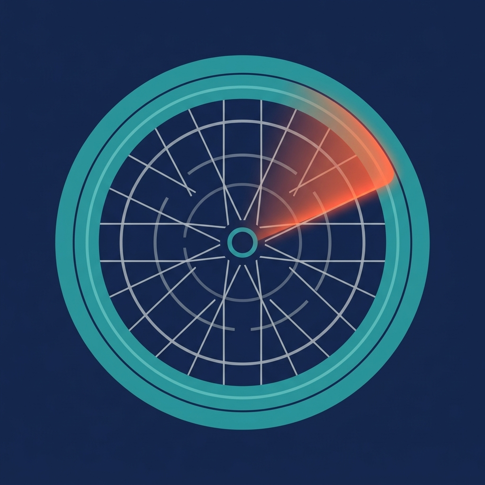

ホイールのスポークをピックなどで弾くと、その音の高さ（周波数）からホイール全体の張力バランスをその場でレーダーチャートに可視化する、自転車整備向けの計測アプリです。物理テンションメーターを持っていなくても、iPhoneのマイクだけで「どのスポークが緩んでいるか」を一目で特定できます。
よく組まれたホイールはレーダーがきれいな円になり、緩みがあるスポークはそこだけ内側に凹んで表示されます。締め直して再測定すれば、凹みが解消したことをその場で確認できます。
Proはサブスクリプションではなく一回払いの買い切り（非消耗型）です。価格はApp内表示が正となります。
・本アプリはスポークの張力バランスを測定するもので、リムの振れ（横振れ・縦振れ）自体は測定しません。振れ取りの前段としての張力の均しにご利用ください。
・Kgf（張力）表示は音の周波数からの推定値です。物理テンションメーターと同等の絶対精度を保証するものではありません。
・本アプリは完全オフラインで動作し、録音の保存・送信は一切行いません。
ご質問・ご要望・不具合報告は、お問い合わせフォームよりお寄せください。
Pluck a spoke and SpokeTune turns the pitch into a wheel-shaped radar chart of tension balance, in real time, using only your iPhone's microphone — no physical tension meter required. A loose spoke shows up as a dent in the radar so you can spot which one to tighten.
Unlimited measurements for any wheel (free) · radar visualization & balance score (free) · Pro (one-time ¥1,200): tightening guidance, estimated Kgf conversion, and measurement history.
SpokeTune measures spoke tension balance only — it does not measure rim runout (lateral/radial wobble). Kgf values are estimates, not a substitute for a physical tension meter.
The app collects no personal data and works fully offline. See the Privacy Policy.